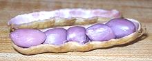

Magnolias

SAFARI
Users
Peanuts were carried from South America to Africa, India and Southeast Asia by European traders and became very popular in all those regions. They were brought to North America from Africa with the slave trade, resulting in the name "goober" (from Bantu nguba) in the American South.
Varieties of Peanut
While there are thousands of varieties of peanut, those grown in North America nearly all fall into four variety groups:
Spanish:
Relatively small and higher oil content than other varieties. Used for salted nuts, peanut candy and peanut butter.Runners:
Larger and good roasting qualities, most are used to make peanut butter.Virginia:
Large peanuts used for salting, confections and roasting in the shell.Valencia:
The preferred type for boiling. These are easy to identify because they are mostly 3 seeds to a pod, tightly packed and the pod has no restrictions between seeds.
Buying, Storing, Cooking Peanuts
Buying:
Peanuts are not hard to find in markets all over North America, generally sold raw blanched or unblanched, roasted in the shell with or without salt, and shelled roasted peanuts with or without salt. Raw in the shell is not commonly available outside peanut growing regions.The main concerns when buying peanuts are rancidity and mold. It is best to buy your peanuts from a source that has high turnover. Peanuts go rancid rather quickly fresh or roasted. They should be smelled and tasted for rancidity and discarded if any is present. Not only do the products of rancidity taste bad, some are suspected carcinogens. Any trace of mustiness or mold is grounds for immediate disposal as it may involve powerful toxins.
Peanuts bought in the shell should not smell musty or show dark spots or insect damage. The pods should be mostly completely closed and should not rattle excessively if shaken, evidence of being too dry.
Storing:
Peanuts are highly perishable in all forms and are vulnerable to molds that produce powerful aflatoxins. They should be kept in tightly sealed containers away from moisture, away from any heat source and should be consumed in a short period of time.Cooking:
In American cuisine peanuts are most often roasted, but in China, India and Africa they are most often boiled. In both Africa and Southeast Asia, dry roasted peanuts are an important garnish. You should always dry roast your own raw peanuts for this use (see our recipe for Dry Roasted Peanuts) for superior flavor and texture.
In the American South, as in Africa, Southeast Asia and South America,
peanuts boiled in the shell in heavily salted water are a very popular snack
food. They are not much seen outside the growing areas because full size
peanuts that have not yet started to dry make the best boilers, and they are
quite perishable. Valencias are strongly preferred and a popular home garden
item in the US South, but Virginias are sometimes used (see
Varieties). Dryer peanuts can be boiled but are not as satisfactory.
Boiled peanuts are highly perishable so should be refrigerated and eaten
soon. The photo specimen is a very rare five seed Valencia pod shown after
boiling.
Photo by Robert Porter distributed under license Creative Commons
Attribution 3.0.
Health and Nutrition
Peanuts are highly nutritious, and while they are not nuts, they offer a benefit profile similar to nuts. They are suspected of or proven to have these health benefits:
Nutrients:
High or significant for manganese, tryptophan, vitamin B3 (niacin), folate, vitamin E, copper, protein.Fats:
High in heart healthy monounsaturated fats, not as high as olive oil but way better than most vegetable oils.Antioxidants:
Peanuts are high in antioxidants, including resvrtatrol (the grape skin antioxidant). Roasting increases the amount of antioxidant p-coumaric acid about 22%. Boiling fresh raw peanuts (see Cooking above) greatly increases antioxidant levels by absorbtion from the shell. These antioxidants are very important to heart health.Cancer:
Researchers in Taiwan found peanuts dramatically reduced the incidence of colo-rectal cancer in women, especially those who ate pickled foods. Improvement was not as dramatic in men who are less vulnerable to pickled foods (at least in Taiwan). The antioxidants in peanuts are suspected of being helpful in preventing other cancers as well.Gallstones
Peanuts are suspected of helping prevent gallstone formation.Dementia:
Research has shown a diet including niacin rich foods slows the onset of Alzheimer's and other forms of age related cognitive decline. Peanuts are relatively high in niacin.Calories:
Dry roasted peanuts have only about 166 calories per ounce. They are not considered a contributor to weight gain unless you really overdo them. In fact they may contribute to weight loss by satisfying hunger fairly quickly.
Allergic Reactions:
Some people, particularly children, have a peanut allergy, estimated to affect about 0.6% of Americans. This immune system over-reaction allergy can be so severe as to cause death from minute exposure to peanuts. The problem is highly demographic and concentrated in North America. It is suspected the cause is an excessively sterile childhood environment and lack of early childhood exposure to peanuts. It appears to be curable by controlled exposure and several studies are ongoing. Researcher feel the risk from the therapy is much less than a lifetime of worrying about peanut exposure.Aflatoxins:
Peanuts are vulnerable to Aspergillus molds that produce powerful toxins also noted for being powerful carcinogens. These molds infect cereal grains, oilseed (including peanuts), spices and tree nuts. Production is continuously monitored by the FDA (Food and Drug Administration), USDA (U.S Department of Agriculture) and peanut processing companies. Any batches that do not meet FDA standards are destroyed. Humans have been found extraordinarily resistant to aflatoxins compared to farm animals, but are still vulnerable.While the food supply seems pretty safe on this subject, it does point to the necessity for proper storage in the home. Vulnerable products need to be stored very dry in sealed containers, at low temperatures and for a short time.
Peanut Products
Peanut Butter:
This is made by a special grinding process from dry roasted peanuts. Warning: Because peanut butter is pitched so much to children, major brands are heavily laced with sugar for greater child appeal, and may also have trans fats added to prevent oil separation. Do Not cook with these abominations (or feed them to your children). Select products containing peanuts and only peanuts (though a little palm oil as stabilizer is not a problem, hydrogenated oils are).Peanut Flour:
This product is available in light roast and dark roast and is made from partially defatted peanuts, ranging from 12% to 28% fat. It is often used in applications that must be gluten free. The light is used where not much peanut flavor is desired and the dark where it is. I have not noticed these products in any of the markets here in Southern California.Peanut Oil:
Refined peanut oil is considered a high grade cooking oil because its flavor is neutral, it has a high level of monounsaturated fats, and it goes to a high temperature (450°F/230°C). Though it is inferior in all respects to olive pomace oil it goes to a considerably higher temperature than pure olive oil. Neither unrefined peanut oil nor virgin olive oil should be used above 300°F/150°C.Back in the 1960s every Chinese recipe called for peanut oil, but due to a massive marketing campaign by the Canadian oil industry few food writers dare call for anything but Canola oil - the health impacts of which are in question.
Back in the early 1960s Planters dominated the peanut oil market and every supermarket had plenty of Planters Peanut Oil on display. Then Planters became a textbook case of what happens when you let MBAs handle a successful brand (Planters was sold to Standard Brands in 1960, which became part of Nabisco Brands, which became part of Kraft foods). I understand it has recovered to some extent in recent times, but I still rarely see it.
Links
- P1 Health Considerations - The World's Healthiest Foods.
- P2 - Oils: Smoke Temperature & Composition